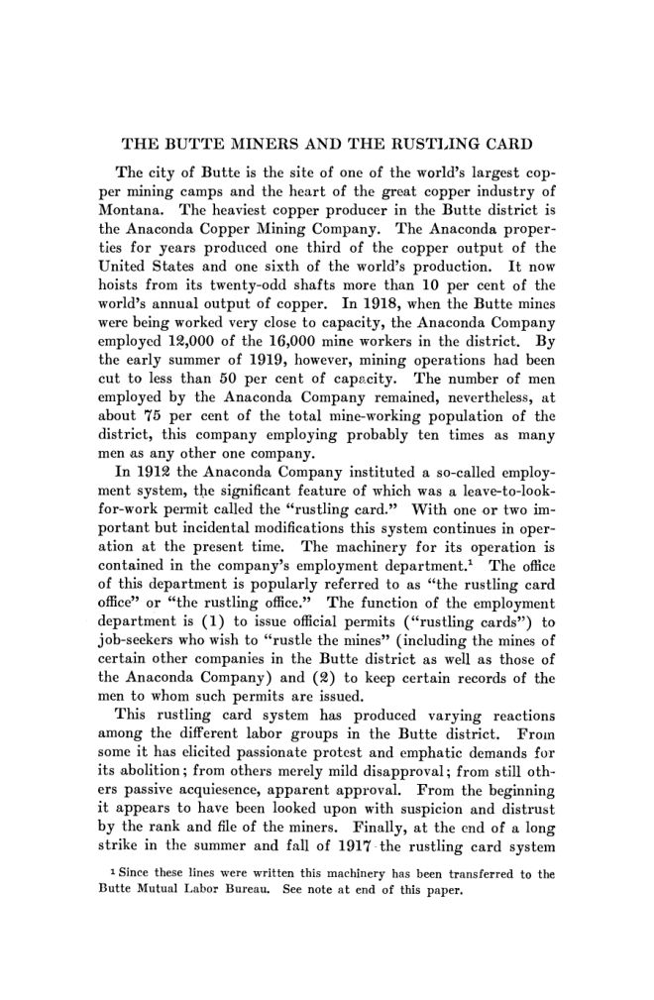

Brissenden, 1920: o cartão que os mineiros de Butte precisavam ter
Leitura: 9 min
Paul F. Brissenden descreve o rustling card, licença sem a qual ninguém podia pedir emprego nas minas da Anaconda em Butte, com a história sindical do distrito, os números de recusas e as mudanças de 1920.


Em 10 de maio de 1920, apareceram nos escritórios e propriedades da Anaconda Copper Mining Company, em Butte, Montana, cartazes com um aviso de uma linha: nenhum membro dos Industrial Workers of the World, os I. W. W., seria empregado ali. Paul F. Brissenden, da New York University, os viu em sua última visita à cidade, em julho, e registrou o fato no pós-escrito de um artigo sobre o rustling card, o cartão sem o qual nenhum mineiro podia sequer pedir emprego nas minas da companhia.
O artigo, publicado no número de dezembro de 1920 da American Economic Review, resume o relatório de uma investigação do Departamento do Trabalho sobre as condições de trabalho na mineração de cobre de Butte. A investigação foi aberta depois que o Metal Mine Workers' Union, ao fim de uma longa greve em 1917, protestou formalmente contra o cartão junto ao secretário do Trabalho, W. B. Wilson.
Quem era a Anaconda em Butte?
Butte era um dos maiores centros de mineração de cobre do mundo. A Anaconda retirava de seus mais de vinte poços mais de 10% da produção mundial do metal. Em 1918, com as minas perto da capacidade, empregava cerca de 12 mil dos 16 mil mineiros do distrito. No início do verão de 1919, a produção tinha caído para menos da metade da capacidade, mas a companhia ainda empregava cerca de três quartos dos mineiros, provavelmente dez vezes mais que qualquer outra empresa.
Brissenden descreve uma inversão em um quarto de século. Antes, um sindicato forte negociava com várias mineradoras pequenas e independentes; agora, vários sindicatos fracos e uma grande massa de mineiros não organizados enfrentavam o que se tornara praticamente um único interesse proprietário. Enquanto os patrões se organizavam, escreve, os empregados se desorganizavam.
Como os sindicatos chegaram a 1919?
O Butte Miners' Union foi fundado em 1878, incorporado em 1881 e, em 1893, integrou a recém-criada Western Federation of Miners, da qual foi a seção mais forte. Até 1914, manteve as minas de Butte sob o regime de exclusividade sindical. Em junho de 1914, sua sede foi dinamitada. As mineradoras culparam agitadores do próprio sindicato; os sindicatos radicais acusaram as mineradoras. A autoria, diz Brissenden, provavelmente nunca será estabelecida. O efeito foi transformar Butte numa cidade sem sindicato até 1917.
O que mudou isso foi o incêndio da mina Speculator, da North Butte Mining Company, em 8 de junho de 1917, um dos piores desastres da história da mineração, com cerca de 140 mortos. Os mineiros deixaram o trabalho, e no dia 12 fundaram o Metal Mine Workers' Union. A greve que se seguiu pedia segurança nas minas, salário de US$ 6 por jornada de oito horas e, acima de tudo, a abolição do cartão. Fracassou em quase tudo, mas obrigou a companhia a modificar o sistema.
Como funcionava o cartão?
O escritório de emprego da companhia não contratava nem demitia ninguém. Fazia duas coisas: emitia licenças a todos os candidatos não considerados indesejáveis e mantinha um registro de quem as recebia. O candidato preenchia uma ficha simples, com nome, idade, local de nascimento, cidadania, ofício e emprego anterior, e respondia a perguntas sobre onde e para quem trabalhara nos dois anos anteriores. Cartas eram enviadas às referências. Com o cartão, podia pedir trabalho aos capatazes das minas da Anaconda e de outras empresas que o exigiam.
Até 1917, o cartão só era entregue depois da resposta das referências, o que obrigava o candidato a esperar duas ou três semanas, e era preciso voltar ao escritório a cada troca de mina. Depois da greve, passou a ser entregue na hora, sujeito a recolhimento posterior, e a servir indefinidamente. O cartão não dava direito a emprego; dava apenas o direito de pedir.
O que diziam a companhia e os sindicatos?
Para a companhia, segundo um de seus dirigentes num discurso de agosto de 1917, o cartão era um sistema de identificação, necessário para conhecer os empregados e afastar das minas homens considerados perigosos, em especial os I. W. W. e outros radicais. Acrescentava outras razões: proteger o comércio de devedores com nomes falsos, impedir que capatazes cobrassem dos mineiros pelos empregos e fornecer dados aos governos. Os dirigentes acusavam os I. W. W. de pôr em risco as minas; Brissenden observa que nenhuma prova concreta de atos destrutivos foi apresentada.
Uma mineradora menor, a da mina Elm Orlu, contratava sem o cartão, que seu presidente considerava contrário às tradições americanas; empregava membros dos sindicatos radicais e não tinha cercas nem guardas, sem registro de incêndios ou violência. Os dois sindicatos conservadores evitavam combater o cartão, em parte porque os rivais radicais o tinham feito sua bandeira. Os radicais o viam como instrumento para punir socialistas e sindicalistas industriais. Perto de cem mineiros prestaram depoimentos juramentados a Brissenden.
Quantos foram barrados?
Pelos números da companhia, de dezembro de 1912 a 17 de maio de 1917 houve 53.323 pedidos de cartão, 1.004 recusas e 357 revisões, restando 647 recusas. Os sindicatos contestavam a contagem e diziam que muitos nem tentavam pedir. Brissenden admite que há casos assim, mas julga que não podem ser muitos.
O objetivo declarado também não foi atingido: havia membros dos I. W. W. e do Metal Mine Workers' Union trabalhando nas minas da Anaconda, talvez mais do que nas minas que não exigiam o cartão. Brissenden admite que o filtro provavelmente afastava o radical mais ativo e falante.
O que aconteceu com a produção e a rotatividade?
A rotatividade no subsolo da Anaconda cresceu muito depois de 1914. A companhia a atribuía à agitação; Brissenden acha que a ligação não pode ser demonstrada e aponta a guerra, que aumentou a demanda e reduziu a oferta de trabalho, e as condições duras e perigosas das minas.
Os sindicatos diziam que o cartão afastava mineiros experientes e reduzia a produção. A companhia forneceu os dados: a produção por homem e por turno caiu de 1,6 tonelada em junho de 1914 para 1,1 tonelada em dezembro de 1919 e subiu para 1,4 tonelada em junho de 1920. Brissenden considera impossível verificar a causa sem um estudo detalhado da experiência da força de trabalho.
O que Brissenden conclui?
O cartão, conclui, é um mal menor do que os radicais pintam, e a discriminação efetiva é pequena. Mas é detestado pelos mineiros, e os mineiros não tinham voz na gestão nem nas condições de trabalho; o comissário do trabalho criado em fevereiro de 1918 apenas ouvia queixas individuais.
“O cartão é talvez mais potente como agência potencial de lista negra do que como máquina efetiva” (“The rustling card is perhaps more potent as a potential black-listing agency than as an actual black-listing machine”)
As funções de registro do cartão, argumenta, seriam cumpridas por um escritório de emprego comum, que efetivamente contratasse e desligasse, como já faziam algumas mineradoras menores do distrito. E é legítimo recusar um candidato por falta de qualificação ou por risco de dano à propriedade; por qualquer outro motivo, há grave dúvida sobre a sabedoria de fazê-lo.
O que mudou em 1920?
Em 18 de abril de 1920, o sindicato dos I. W. W. em Butte declarou greve, pedindo, entre outras coisas, jornada de seis horas, salário de US$ 7 em vez de US$ 5,50 e o fim do cartão. Três dias depois, um confronto entre piquetes e policiais deixou feridos a bala, e ao menos um grevista morreu; a greve acabou. Vieram então os cartazes de maio e a substituição do cartão da Anaconda pelo Butte Mutual Labor Bureau, mantido em conjunto pelas mineradoras. O novo cartão de recomendação exigia uma ficha mais longa, com perguntas sobre cidadania e sobre filiação aos I. W. W. Brissenden o vê como melhora por ser emitido em conjunto, mas observa que continua a ser uma licença para procurar emprego, e não para contratar.
Na minha leitura
Na minha leitura, o artigo é um estudo de poder de mercado no mercado de trabalho. Quando uma empresa emprega três quartos dos trabalhadores de um distrito, o controle de quem pode pedir emprego deixa de ser uma decisão interna e passa a funcionar como regra do próprio mercado. Brissenden percebe isso ao notar que o mesmo cartão é uma questão menor numa empresa entre muitas e uma possível lista negra quando várias o adotam.
O outro ponto de método é separar o efeito medido do efeito esperado. As recusas eram poucas, e os números não mostravam ligação clara com a rotatividade ou a produção. Mas o comportamento dos mineiros dependia da ameaça, não da estatística, e por isso o autor trata o cartão como instituição, e não só como registro administrativo.
Glossário
- Rustling card
- licença da Anaconda sem a qual o mineiro não podia pedir emprego nas minas.
- Lista negra
- relação de trabalhadores que os empregadores se recusam a contratar.
- Regime de exclusividade sindical
- arranjo em que só sindicalizados podem ser contratados (closed shop).
- Industrial Workers of the World
- organização sindical radical americana conhecida como I. W. W.
- Rotatividade
- frequência com que os postos de trabalho são ocupados por novos empregados.
- Butte Mutual Labor Bureau
- escritório criado em 1920 pelas mineradoras de Butte para emitir cartões de recomendação.
Fontes
- The Butte Miners and the Rustling Card — Paul F. Brissenden (New York University) (pp. 755–775). JSTOR · Internet Archive (PDF)
- Edição completa, com os demais artigos: Nº 167 do Arquivo.
Documento em domínio público (EUA, publicado antes de 1931), via JSTOR Early Journal Content e Internet Archive. Resumo e comentário do autor deste site, sem afiliação com a American Economic Association. Encontrou um erro? Escreva: a correção é publicada no próprio texto, com data.
← King, 1920: quem paga quando os bancos criam crédito ↑ Nº 167 · O crédito que não paga juros e o cartão dos mineiros de Butte